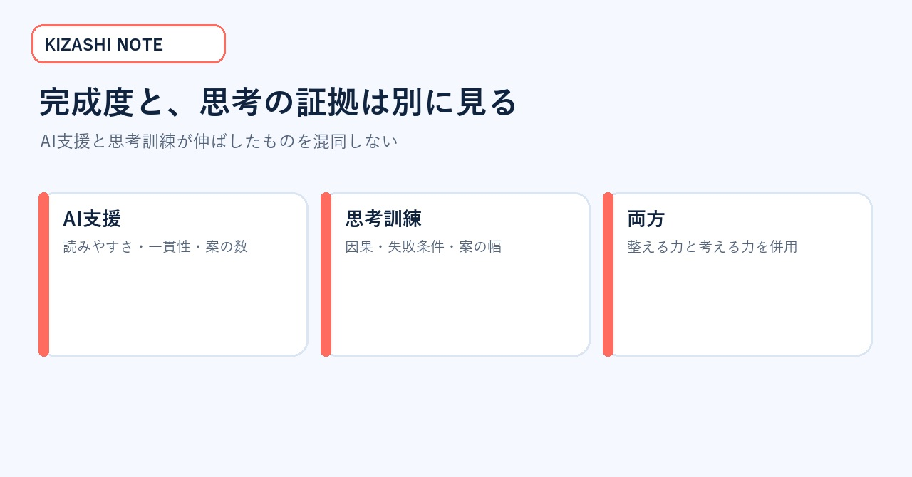
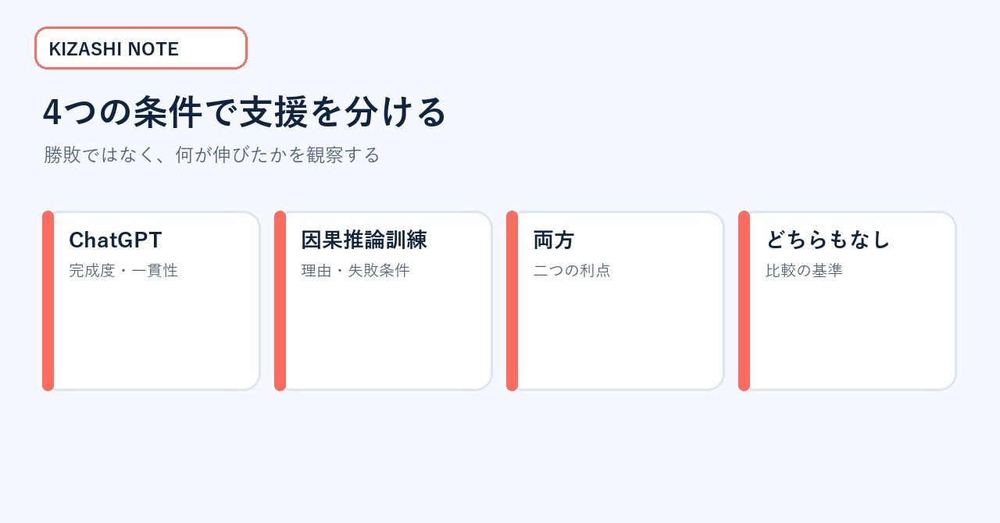
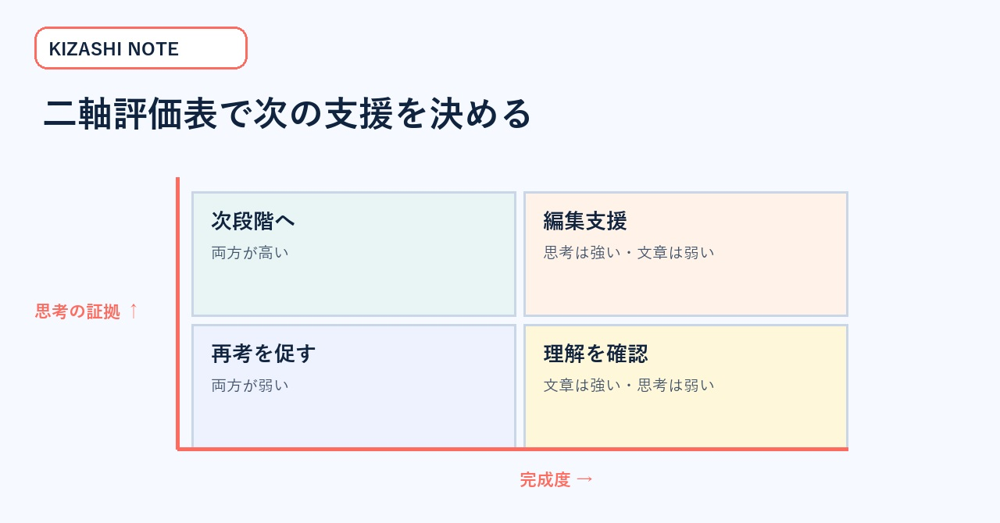
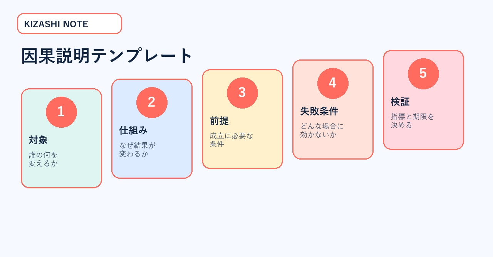
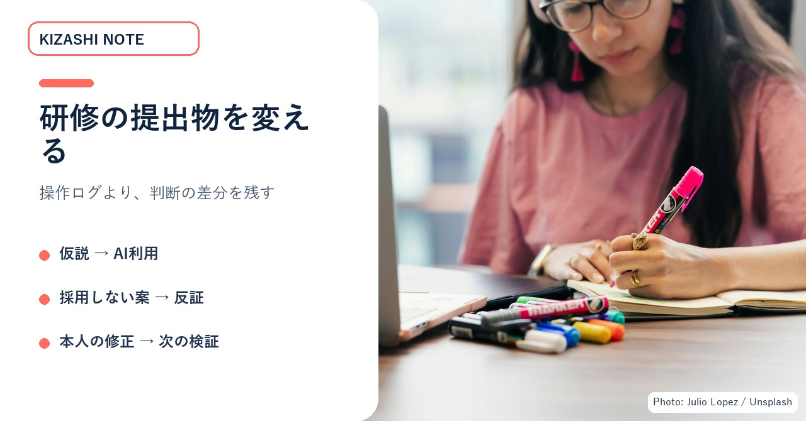

AIで文章が整っても、独自性は別に測る｜研修を変える二軸評価表
生成AIを使う研修や採用課題で、完成度の高い提出物は増えた。しかし「本人は何を考え、どこを変えたのか」が見えず、採点者ごとの印象差も大きい――。そんな人材開発責任者が、AI利用を一律減点せず、完成度と思考の証拠を分けて評価できるようにします。持ち帰れるのは、二軸評価表、因果説明テンプレート、提出チェック、研修設計の変更手順です。
この記事が役立つ場面
- 研修や採用課題で生成AIを許可したが、評価基準が追い付いていない。
- 読みやすい提出物ほど高得点になり、独自の問いや反証が拾えない。
- AI利用ログを大量提出させず、本人の判断だけを確認したい。
- 採点者間で「よく考えている」の意味が揃っていない。
すべての学生や業務へ同じ効果を保証する記事ではありません。特定の大学実験を出発点に、企業研修で再検証できる評価設計へ翻訳します。
まず見る図：完成度と独自性は同じではない
AIを使うと文章は読みやすくなり、論点も揃いやすくなります。しかし、なぜその案を採ったか、どんな条件なら失敗するか、他の案と何が違うかは、完成した文面だけでは見えません。
図1：文章の完成度と、判断の独自性を一つの点数に混ぜない。写真：Vitaly Gariev / Unsplash。
一次情報：4つの条件で何を比べたか
OpenAIが2026年8月27日に紹介した研究では、ボッコーニ大学の学部1年生1,000人超が大学グッズ店のマーケティング提案に取り組みました。授業時間単位で、ChatGPTを使える、因果推論の訓練を受ける、両方を受ける、どちらも受けない、という4つの条件へ無作為に割り当てられました。
因果推論の訓練はAI操作の練習ではありません。「なぜその案が効くのか」「どんな条件なら失敗するか」を考える練習です。提出物は訓練された人間が5点尺度で評価し、別途、アイデアの数や多様性、因果推論、専門家回答との類似性などが分析されました。
ChatGPTが伸ばしたもの
ChatGPTへアクセスできた学生は、5点尺度でほぼ1点高い評価を得ました。アイデア数が増え、論理が明確になり、専門家の提案に近い構成になりました。経験の少ない人でも、より専門的に見える答えを作りやすくなったと言えます。
因果推論の訓練が伸ばしたもの
因果推論の訓練を受けた学生は、提案がなぜ効くか、いつ失敗するかをより明確に説明しました。さらに、他の学生とは異なる幅広いアイデアを出しました。しかし、従来型の評価表では、その利点が十分に点数へ表れませんでした。
次の図は、研究結果を「どちらが優れているか」ではなく、伸びたものの違いとして整理します。

図2：AI支援と思考訓練は代替関係ではなく、異なる弱点を補う。
無料部分で重要なのは、AIを使ったかどうかではなく、評価したい能力を一つの総合点へ押し込んでいないかを疑うことです。ここから先では、実際の採点表と提出様式へ落とします。
成果物1：4つの条件を研修へ翻訳する比較図
研究の4条件をそのまま自社研修の勝敗表にしてはいけません。対象は大学1年生の特定課題で、モデル、指導、評価尺度も限定されています。使えるのは「支援の種類を分けて比較する」という実験設計です。

図3：自社研修では、同じ参加者へ同時に全部を変えず、支援の種類と観察項目を分ける。
自社で小さく試す場合は、全員の能力を断定するためでなく、評価表が何を拾い、何を見落とすかを確認します。公開範囲を限定した同一課題を用意し、完成度、理由説明、失敗条件、案の幅、修正履歴を比較します。
成果物2：完成度と思考の証拠を分ける二軸評価表
軸A 完成度（各0〜2点）
| 項目 | 0点 | 1点 | 2点 |
|---|---|---|---|
| 読みやすさ | 構造がなく読みにくい | 概ね理解できる | 結論・根拠・次行動が明確。 |
| 論点の充足 | 重要論点が欠ける | 主要論点はある | 反対条件まで含む。 |
| 実行可能性 | 具体性がない | 一部実行可能 | 担当・期限・指標まである。 |
軸B 思考の証拠（各0〜2点）
| 項目 | 0点 | 1点 | 2点 |
|---|---|---|---|
| 採用理由 | 理由なし | 一般論 | 対象・条件に結び付く。 |
| 因果説明 | 相関だけ | 因果の一部 | なぜ効くかと前提を説明。 |
| 失敗条件 | なし | 弱い注意書き | 反証・失敗条件・代替案がある。 |
| 独自性 | 一般的な案のみ | 組合せに工夫 | 問い・観点・方法が明確に独自。 |
完成度が高く思考の証拠が弱い提出物は、「AIで整っているが本人の理解を確認できない」と判断できます。完成度が低く思考の証拠が強い提出物は、文章支援や編集支援を足せば伸びる可能性があります。両方が高ければ、AIを使いながら自分の判断を保てています。

図4：総合点の前に四象限で状態を分けると、次の支援が具体化する。
採点者には、点数だけでなく「どの文または記録を証拠にしたか」を一行残してもらいます。証拠位置が一致しない項目は、評価語が曖昧か、提出様式が不足しています。
成果物3：因果説明テンプレート
提出物に次の5行を必須にすると、最終文面だけでは見えない思考を確認できます。
- 対象：誰の、どの課題を変える案か。
- 仕組み：何を変えると、なぜ結果が変わるのか。
- 前提：成立に必要な条件は何か。
- 失敗条件：どんな場合に効かないか。
- 検証：小さく確かめる指標と期限は何か。
記入例
文章がきれいかどうかより、因果・前提・失敗・検証がつながっているかを見ます。

図5：AIの操作履歴を大量提出させず、判断の筋道だけを短く残す。
成果物4：AI利用前後の提出チェック
AIを使う前
- □自分の仮説を3行で書いた。
- □対象者と課題を一つに絞った。
- □成功の指標を決めた。
- □反対意見を一つ書いた。
AIを使った後
- □AIが追加した主張の根拠を開いた。
- □採用しなかった案と理由を残した。
- □一般論を自分の対象条件へ直した。
- □失敗条件を一つ以上書いた。
- □最終文面で自分が変えた箇所を示した。
これはAI使用を取り締まるための記録ではありません。AIを使っても、本人の判断と学びを観察できるようにするためです。入力全文や長い会話ログではなく、仮説、採用しなかった案、採用理由、最終修正の4点に絞れば、確認負荷も抑えられます。
成果物5：研修設計を変える3つの方法
1. 最終回答だけ提出させない
仮説、AIへの質問、採用しなかった案、最終修正を一緒に提出させます。採点者が必要とするのは操作の全履歴ではなく、意思決定が分かる証拠です。
2. 同じ答えを競わせない
全員に同じ正解を求めると、AIが得意な平均的で整った答えへ収束します。対象者、制約、優先指標を変え、複数の良い答えが成立する課題にします。
3. 反証を採点する
「この案が失敗する条件」を書くと、本人が提案の仕組みを理解しているか見えます。強い案とは、欠点がない案ではなく、適用条件と限界を説明できる案です。

図6：研修はAI利用の有無を監視する場ではなく、判断前後の変化を観察する場へ変える。写真：Julio Lopez / Unsplash。
採点者を揃えるための運用
最初の10件は、二人の採点者が独立して評価します。点差が出た項目では、提出者ではなく基準文を見直します。「独自性がある」「実行可能」のような抽象語だけで合意せず、どの文や図を証拠とするかを決めます。
次に、完成度と思考の証拠を別々に集計します。総合点だけを順位へ使わず、文章支援が必要な人、因果の確認が必要な人、両方が高い人でフィードバックを分けます。評価結果を能力の固定ラベルにせず、次の学習行動へつなげます。
価格500円の理由と、買わなくてよい条件
一次情報は無料で読めます。この有料部分の価値は、研究結果を紹介することではなく、自社の提出様式へコピーできる二軸評価表、因果説明テンプレート、利用前後チェック、採点者の合わせ方へ変換した点です。
すでに完成度とプロセスを別々に採点し、採点者間一致も確認している組織は購入する必要がありません。AIを使わない短い知識確認だけを行う場合も、従来の正誤判定で足ります。
今日の最初の一歩
次回課題の採点表を開き、「読みやすさ」の隣に「この案が効く理由と、効かない条件を説明できているか」を一行追加してください。次の10件だけ二人で採点し、点差が出た項目を記録します。それが、自社向け二軸評価表の最初の検証になります。
一次情報
OpenAI, “Better answers, broader thinking: What students gain from ChatGPT and critical-thinking training,” 2026-08-27
https://openai.com/index/what-students-gain-from-chatgpt-critical-thinking-training/
Asirvatham et al., “Training novices to think, or giving them LLMs? Evidence from an RCT,” 2026-08
https://cdn.openai.com/pdf/novices-and-llm-august-2026.pdf
OpenAI, “Teaching with AI,” 2023-08-31
https://openai.com/index/teaching-with-ai/
※本記事は公開された実験結果を研修設計へ応用した解説です。研究対象外の集団へ同じ効果を保証せず、自社課題で小さく再検証することを前提にしています。